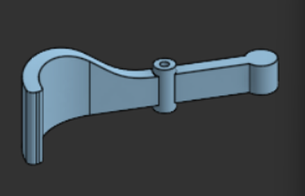
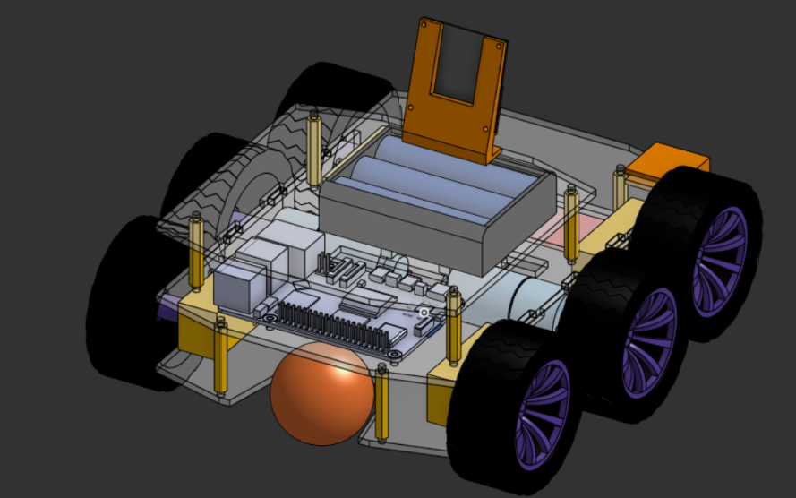

Mecanismo para recoger la pelota
Uno de los retos requiere que el robot recoja una pelota. Como el robot ya involucra bastante trabajo de las tres áreas, se buscó una solución pasiva (sin motores, sin sensores y sin código adicional) para no complicar más a ninguna área.
Versión 2: pinza con liga
Con base en las medidas de la pelota proporcionadas, se diseñó un prototipo cuyo funcionamiento depende de la tensión de una liga o banda.
El concepto es simple:
El robot avanza y la pelota es empujada hacia una pared.
Esto hace que la pinza se abra y la pelota entre.
La pelota se mantiene dentro por la tensión de la propia liga.


Primer diseño del mecanismo para la pelota - 24/9/26
Advertencia
Este mecanismo se diseñó y, en teoría, es sencillo y efectivo, pero todavía falta imprimirlo y probarlo para validar su funcionamiento.
Versión 3: espacio de almacenamiento
Con el rediseño de la Versión 3, al mover los motores hacia el centro de la placa base quedó un espacio libre para un mecanismo pasivo y simple. Se agregó un espacio para almacenar la pelota dentro del robot, utilizando ligas como mecanismo pasivo.


Espacio para almacenar la pelota en la versión 3 - 1/10/26
Ventajas del enfoque pasivo
No necesita motor ni servo, por lo que no usa pines ni consume corriente.
No requiere código, por lo que programación no tiene trabajo extra.
Menos piezas que puedan fallar.